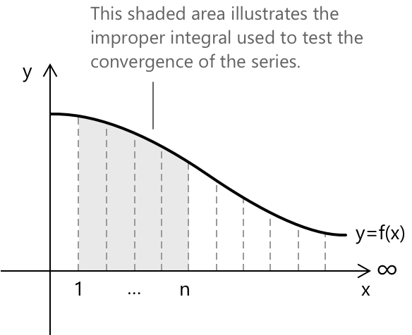

Інтегральна ознака збіжності рядів
Що таке інтегральний засіб
Визначення суми нескінченного ряду та оцінка його збіжності або розбіжності не завжди є простими. Існує кілька методів дослідження збіжності, один із яких полягає в порівнянні ряду з неправильним інтегралом. Цей засіб застосовується до рядів з додатними членами і ґрунтується на принципі, що збіжність ряду можна визначити, порівнявши її з поведінкою відповідного неправильного інтеграла.
Нехай \( f \) буде додатною, спадаючою функцією, визначеною на \( [1, +\infty) \), наприклад, раціональною або поліноміальною функцією. Тоді ряд
\[ \sum_{n=1}^{\infty} f(n) \]
збігається або розбігається тоді і тільки тоді, коли неправильний інтеграл
\[ \int_{1}^{\infty} f(x) \, dx \]
робить те саме, за умови, що \( f \) є неперервною на \( [1, +\infty). \)

Графік ілюструє зв'язок між рядом і неправильним інтегралом, як це зазначено в інтегральному засобі.
- Крива \( f(x) \) представляє неперервну функцію.
- Сіра область показує частину неправильного інтеграла (площа під кривою від \( x = 1 \) до деякого \( x = n \)).
- Вертикальні прямокутники представляють члени ряду \( f(n) \), кожен з яких має основу 1 і висоту \( f(n) \).
Ця візуалізація допомагає порівняти дискретну суму (ряд) та неперервне накопичення (інтеграл). Оскільки прямокутники переоцінюють або недооцінюють площу залежно від поведінки функції, інтеграл можна використовувати для визначення збіжності ряду.
Доведення
Розглянемо часткову суму ряду:
\[ s_k = \sum_{n=1}^{k} f(n) \quad k \in \mathbb{N} \]
Це представляє суму перших \( k \) членів ряду \( \sum f(n) \). Оскільки ряд має додатні члени, послідовність часткових сум \( {s_k} \) є зростаючою і має границю при \( k \to \infty \):
\[ \lim_{k \to +\infty} s_k = s \in [0, +\infty] \]
Подібно до того, як ряд визначається границею своїх часткових сум, неправильний інтеграл визначається як границя визначеного інтеграла, коли верхня межа прямує до нескінченності:
\[ \lim_{k \to +\infty} \int_1^k f(x)\, dx = \int_1^{+\infty} f(x)\, dx \]
Завдяки лінійності інтеграла, і зокрема його адитивності за суміжними проміжками, ми можемо записати:
\[ \int_1^k f(x)\,dx = \sum_{n=1}^{k-1} \int_n^{n+1} f(x)\,dx \]
Це справедливо, оскільки визначений інтеграл на \([1, k]\) може бути розкладений у суму інтегралів на підпроміжках одиничної довжини \([n, n+1]\), які є розрізними та послідовними. Оскільки припускається, що \( f \) є спадаючою, ми отримаємо наступну нерівність для всіх \( x \in [n, n+1] \):
\[ f(n+1) \leq f(x) \leq f(n) \]
Застосувавши нерівність всередині інтеграла, отримаємо:
\[ \int_n^{n+1} f(n+1)\,dx \leq \int_n^{n+1} f(x)\,dx \leq \int_n^{n+1} f(n)\,dx \]
За властивостями визначених інтегралів, перший і третій члени представляють інтеграли від сталих функцій. Отже, сталі можна винести за знак інтеграла, що дає:
\[ f(n+1) \leq \int_n^{n+1} f(x), dx \leq f(n) \]
Тепер просумуємо ці нерівності від \( n = 1 \) до \( k-1 \):
\[ \sum_{n=1}^{k-1} f(n+1) \leq \sum_{n=1}^{k-1} \int_n^{n+1} f(x)\, dx \leq \sum_{n=1}^{k-1} f(n) \]
Беручи границю при \( k \to \infty \), отримаємо:
\[ \sum_{n=2}^{\infty} f(n) \leq \int_1^{\infty} f(x)\, dx \leq \sum_{n=1}^{\infty} f(n) \]
що показує, що неправильний інтеграл обмежений двома версіями ряду, які відрізняються лише першим членом \( f(1) \). Оскільки інтеграл лежить між двома версіями ряду, що відрізняються лише першим членом, якщо інтеграл збігається, то і ряд збігається, а якщо інтеграл розбігається, то і ряд розбігається.
Приклад
Визначте, чи є наступний ряд збіжним чи розбіжним, використовуючи інтегральний засіб:
\[ \sum_{n=2}^{\infty} \frac{1}{n \log n} \]
Спершу розглянемо відповідну функцію:
\[ f(x) = \frac{1}{x \log x} \]
визначену на проміжку \( x \geq 2 \). Ця функція є додатною, неперервною та спадаючою на \( [2, +\infty) ,\) отже умови застосування інтегрального засобу виконані.
Тепер обчислимо неправильний інтеграл:
\[ \int_2^{\infty} \frac{1}{x \log x} \, dx \]
Щоб обчислити це, використаємо заміну \( u = \log x \), звідси \( du = \frac{1}{x} dx \). Інтеграл набуває вигляду:
\[ \int_{\log 2}^{\infty} \frac{1}{u} \, du = \lim_{t \to \infty} \int_{\log 2}^{t} \frac{1}{u} \, du = \lim_{t \to \infty} [\log u]_{\log 2}^{t} = \infty \]
Оскільки інтеграл розбіжний, інтегральний засіб вказує нам, що ряд також розбіжний.
Глосарій
-
Нескінченний ряд: вираз вигляду \( \sum_{n=1}^{\infty} a_n = a_1 + a_2 + a_3 + \dots \), де \( a_n \) є членами ряду.
-
Збіжність ряду: нескінченний ряд збігається, якщо його послідовність частинних сум наближається до скінченної границі.
-
Розбіжність ряду: нескінченний ряд розбігається, якщо його послідовність частинних сум не наближається до скінченної границі (або прямує до нескінченності, або осцилює).
-
Неправильний інтеграл: визначений інтеграл, у якого принаймні одна з меж інтегрування є нескінченною, або підінтегральна функція має розрив усередині проміжку інтегрування.
-
Спадаюча функція: функція \( f(x) \) є спадаючою на проміжку, якщо для будь-яких \( x_1 < x_2 \) на цьому проміжку виконується \( f(x_1) \geq f(x_2) .\)
-
Неперервна функція: функція, графік якої можна намалювати, не відриваючи олівця від паперу, що означає відсутність різких стрибків або розривів.
-
Частинна сума \( s_k \): сума перших \( k \) членів нескінченного ряду, що позначається як \( s_k = \sum_{n=1}^{k} a_n \).
-
Границя послідовності: значення, до якого наближаються члени послідовності, коли індекс прямує до нескінченності.
-
Адитивність інтегралів: властивість, згідно з якою визначений інтеграл по складеному проміжку дорівнює сумі визначених інтегралів по розjoint підпроміжках, що складають цей складений проміжок.